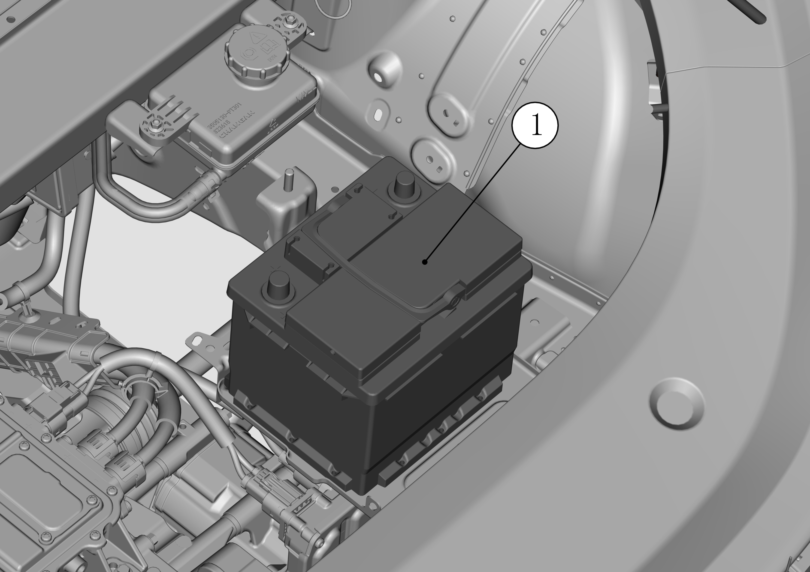
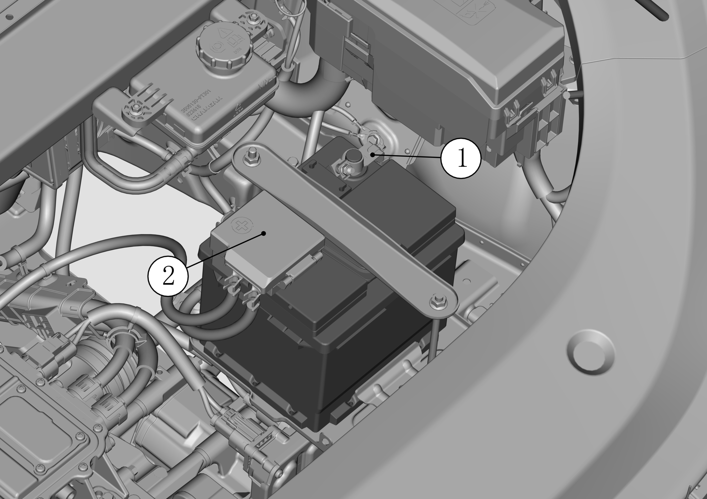

蓄电池总成
拆卸
-
采用8mm套筒，先断开蓄电池负极钳螺母，再打开蓄电池正极保险盒盖断开正极螺母；

注：①：负极钳螺母；②：蓄电池正极保险盒盖（正极螺母在正极保险盒内）。
-
采用8mm套筒松开蓄电池上方压条及下方压板紧固螺母，依次取下蓄电池压条和压板；

注：①：蓄电池压条及螺栓；②：蓄电池压板及螺栓。
-
抓住把手提出蓄电池总成。

注：①：蓄电池总成。
安装
注意
安装前，应对每个零件进行检查，看有无变质或损坏，如发现缺陷应更换。
-
将蓄电池总成稳定放置在蓄电池托盘上；

注：①：蓄电池装总成。
-
装回蓄电池压板和压条，用套筒紧固螺栓；

注：①：蓄电池压条；②：蓄电池压板。
-
先安装正极固定螺母及正极保险盒盖，再安装负极电源线，安装扭矩均为6N.m。

注：①：蓄电池负极电源线；②：蓄电池正极保险盒盖（正极螺母在正极保险盒内）。
注意
安装固定螺母时，应细心防止蓄电池极柱破裂，避免后期蓄电池漏液风险；搭负极搭铁线时会产生短暂的火花，属于正常现象，不必过度担心。